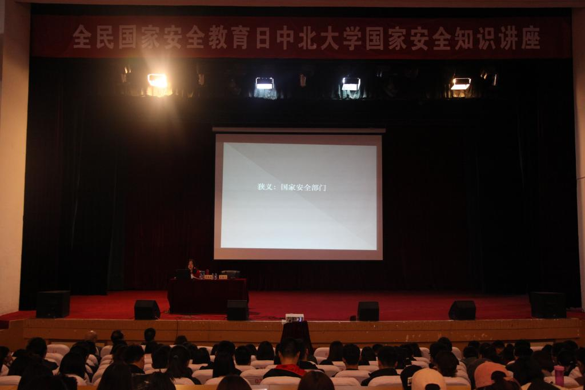

4月11日下午，在全民国家安全教育日到来之际，我校特邀山西省国家安全厅杨琳娜警官在科艺苑举办国家安全知识讲座。本次活动由国际交流合作处主办，党委办公室、宣传部、校团委、安全保卫处协办。
根据省委指示，在省教育厅的统一部署下，经过校党委批准，我校特邀请山西省国家安全厅杨琳娜警官来到我校讲授隐蔽敌情、国家安全保护知识。杨琳娜警官是硕士研究生毕业、二级警司，主要从事侦查保卫工作。本次讲座旨在贯彻落实国家基本安全观，提高大学生的自我防范和维护国家安全的意识。
杨警官通过一个简短的视频向同学们讲述了国家安全内涵，包括国民安全、国域安全、资源安全、经济安全、社会安全等12个方面。通过我国反奸防谍的历史讲述了国家安全保护工作的重要性。她指出，党和国家历来都十分关注国家安全，国家主席习近平特别强调要高度重视国家安全，要求我们统一思想加强行动，切实保障国家安全。我国还颁布了《中华人民共和国国家安全法》、《中华人民共和国反间谍法》、《中华人民共和国反恐怖主义法》为国家安全提供有力保障。杨警官还指出，境外间谍情报机关，藏独、台独、蒙独等暴力恐怖势力、宗教势力都严重威胁着国家安全。公民和组织有义务为国家安全建立一道防线，国家安全需要每位公民行动起来，共同维护。
针对高校学生，杨警官讲了当前境内外敌对势力实施渗透策反的惯用手段，她要求大学生一要树立热爱国家、热爱社会主义的信念；二要积极提高自身的防范意识；三要养成保护国家秘密和个人隐私的习惯。针对我校军工科研项目多的情况，她指出，尤其要保护好文件资料、电子邮箱等信息，加强保密意识，切实保障国家安全利益。
讲座前，国际交流合作处及安全保卫部（处）工作人员于科艺苑门口发放了《中华人民共和国国家安全法》、《中华人民共和国反间谍法》等小册子，向广大师生宣传国家安全知识。
学生记者 贾星玉 刘晓倩
